![Salle à manger de Noël le soir : table ovale noire à pieds cannelés dressée avec un chemin en velours bordeaux, une guirlande de sapin lumineuse avec pommes de pin, des bougies rouges dans des bougeoirs dorés, des photophores en verre rouge, des vases verts striés avec des baies rouges givrées, des assiettes dorées, des serviettes rouges, des couverts dorés et des verres rouges ; fauteuils en velours vert émeraude à pieds dorés avec nœuds rouges, lustre doré à globes de verre, sapin décoré de boules rouges et or avec cadeaux lumineux, rideau de LED à la fenêtre](../assets/img/looks/look005-table-noel-rouge-vert-doree.jpg)
Look n°5
Table de Noël rouge, vert et doré
Une table de Noël moderne et spectaculaire : fauteuils en velours vert émeraude, table ovale noire, bougies rouges, verres rubis et lumières partout. Voici les articles pour recréer cette ambiance de fête chez toi.
Prix au 29/10/2026
-
Table à manger ovale noire à pieds cannelés
180 × 90 × 76 cm, 6 places. Plateau noir effet bois, finition semi-brillante ; 3 pieds noirs cannelés : un gros pied en U à un bout, une colonne ronde et un panneau plat à l'autre.
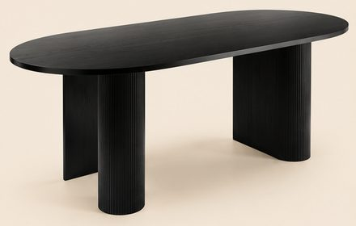
347,42 €Voir sur Amazon -
Fauteuils en velours vert émeraude, pieds dorés (lot de 2)
Velours vert émeraude, dossier à surpiqûres verticales, accoudoirs arrondis, pieds coniques en métal doré ; 57 × 56 × 85 cm. L'image en montre 7 : prendre 4 lots.
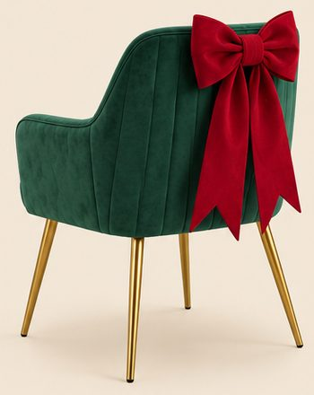
159,99 € le lot de 2Voir sur Amazon -
Lustre linéaire doré à 7 globes de verre
Barre dorée de 110 cm, 7 globes en verre transparent de 15 cm (ils paraissent un peu plus gros sur l'image), hauteur réglable de 20 à 80 cm, 7 ampoules E27.
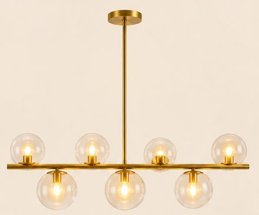
203,99 €Voir sur Amazon -
Sapin de Noël lumineux 180 cm
180 cm, 1 322 pointes, 350 LED intégrées (blanc chaud ou multicolore), pied en métal.
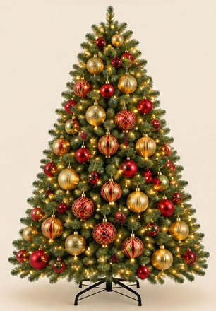
99,99 €Voir sur Amazon -
Boules de Noël rouge et or
Lot de 30 boules incassables de 6 cm : dorées, rouges à spirales pailletées et à losanges dorés. Sur l'image, le sapin en porte une cinquantaine, plus grosses (environ 10 cm) : prendre 2 lots, ou le lot de 12 boules de 8 cm (21,84 €) pour un effet plus proche.
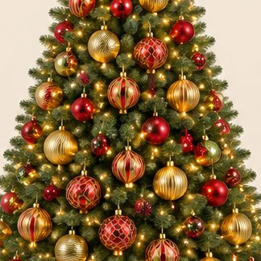
-
Grands nœuds en velours rouge (lot de 6)
28 × 43 cm, velours rouge, 2 boucles et 2 longs pans, à attacher au dos des fauteuils. Sur l'image, les pans du nœud du premier plan paraissent plus longs.
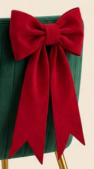
16,99 €Voir sur Amazon -
Chemin de table en velours bordeaux
28 cm de large, rouleau de 5 m à couper à la longueur de la table.
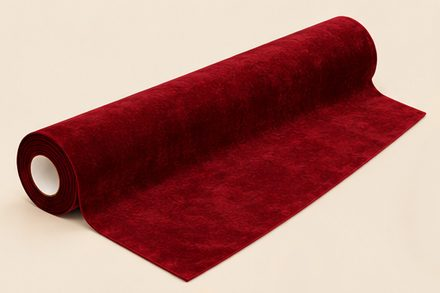
19,99 €Voir sur Amazon -
Guirlande de sapin lumineuse 2,7 m
2,7 m, 25 cm d'épaisseur, 100 LED blanc chaud à piles, 27 pommes de pin et 27 grappes de baies rouges.
35,99 €Voir sur Amazon -
Bougeoirs dorés fins et bougies rouges
Bougeoirs dorés très fins, lot de 6 en 3 hauteurs (22,3 / 27,2 / 32,1 cm) ; l'image en montre 8 : prendre 2 lots. Bougies coniques rouges de 25 cm, lot de 10.
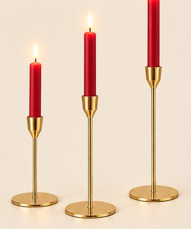
-
Assiettes de présentation dorées (lot de 6)
Ø 33 cm, bord découpé façon corail, surface striée dorée, plastique rigide.
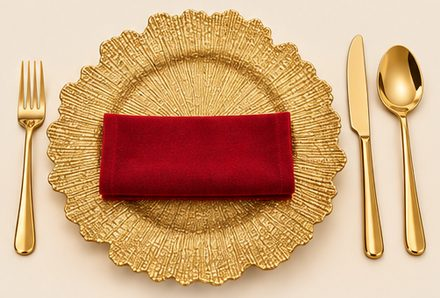
39,99 €Voir sur Amazon -
Verres à vin rouges (lot de 6)
Verre teinté rouge rubis, pied compris, coupe en tulipe ; 20 cm de haut, 37 cl.
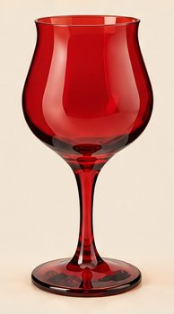
28,80 €Voir sur Amazon -
Couverts dorés 30 pièces
Pour 6 personnes, acier inoxydable doré brillant, manches lisses.
26,99 €Voir sur Amazon -
Serviettes de table rouges (lot de 12)
Coton mélangé rouge, 46 × 46 cm.
23,99 €Voir sur Amazon -
Photophores en verre rouge et bougies LED
Lot de 12 photophores en verre rouge taillé en pointes de diamant, 6,5 cm de haut : sur l'image, ils paraissent plus grands (environ 10 cm). Avec un lot de 24 bougies chauffe-plat LED rouges.
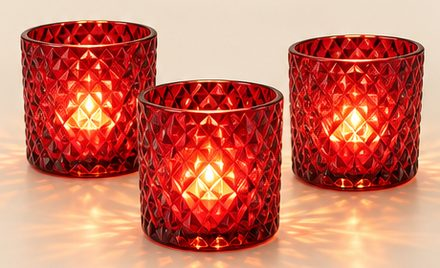
-
Vases en verre vert strié et baies rouges givrées
Vase en verre vert strié de 25 × 10 cm (2 sur l'image). Tiges de baies rouges givrées de 50 cm, lot de 6 : prendre 2 lots pour des bouquets aussi fournis.
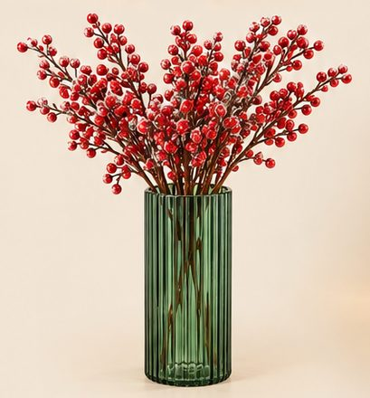
-
Rideau lumineux LED 3 × 2 m
200 LED blanc chaud sur 10 fils de 2 m, branchement USB, télécommande et 8 modes.
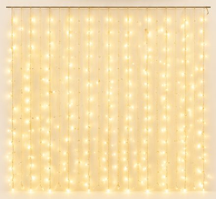
14,99 €Voir sur Amazon -
Cadeaux lumineux (lot de 3)
3 cubes blancs duveteux éclairés de l'intérieur (25,5 / 20,5 / 15,5 cm), rubans rouge, vert et doré, 50 LED à piles avec télécommande.
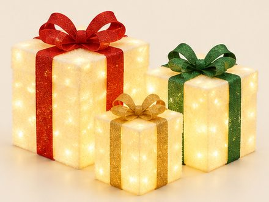
26,99 €Voir sur Amazon -
Ruban LED blanc chaud 5 m
Ruban COB 3000 K, lumière continue sans points, 5 m : pour la gorge lumineuse du plafond.
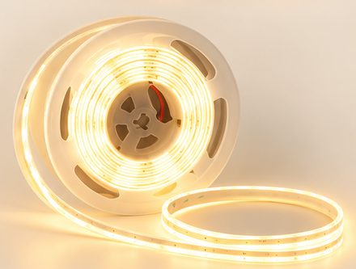
26,99 €Voir sur Amazon
Image d'inspiration générée par IA. Prix indicatifs, revérifiés toutes les deux semaines.